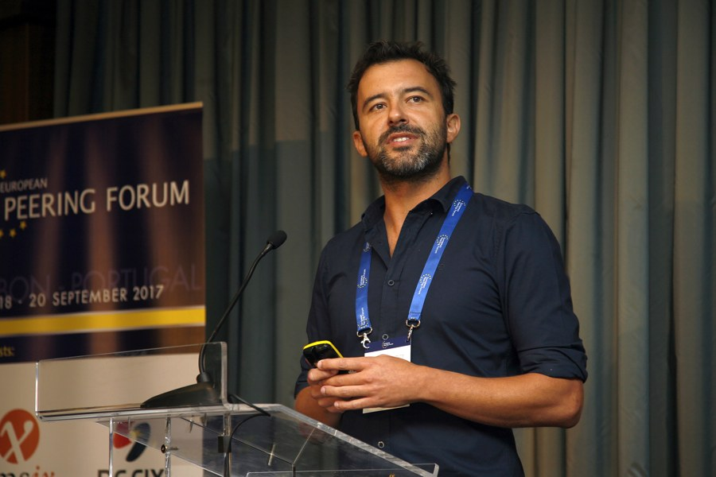

OCT
2026
2026
CoNEXT 2027 PC co-chair
I am co-chairing the technical program committee of ACM CoNEXT 2027 with Gyuyeong Kim. The call for papers is now available — we look forward to your submissions!

Associate Professor
Instituto Superior Técnico, University of Lisbon
I am a computer scientist working on networks and systems. My research focuses on programmable networks, network function acceleration, and machine learning for network security. I am interested in how software and hardware can work together to make networks faster, more flexible, and more secure.
I am co-chairing the technical program committee of ACM CoNEXT 2027 with Gyuyeong Kim. The call for papers is now available — we look forward to your submissions!
I am serving on the NSDI 2027 program committee.
This semester, I am teaching Advanced Topics in Networked Distributed Systems: a paper-based course exploring networks, distributed systems, and their intersection with AI.
I work with students and colleagues at INESC-ID and Instituto Superior Técnico on programmable networks, systems, and security.
Network functions, synthesis, and acceleration.
Co-advised with Luís Pedrosa and Justine Sherry.
Programmable network security and in-network intrusion detection.
Co-advised with Miguel Correia.
Synthesizing adaptable network functions.
Co-advised with Luís Pedrosa.
An initial selection of team members. More profiles to follow. Former students →
NA PRAIA – Network-Assisted Preemptive Recovery for Artificial Intelligence Applications
Projeto: NEAT – Network Emulator for Applied Teaching
Development of an Internet-SCION translator, towards a secure Internet
I also coordinate the Master’s Programme in Telecommunications and Informatics Engineering (METI).
For Computer Organization (OC) students: cache simulation to explore cache behavior.
Turning sequential network functions into parallel implementations while preserving their semantics.
Paper & presentation →Exploring how translation can help the Internet evolve towards new architectures.
Read the paper →Combining feature computation in programmable switches with machine learning on servers.
Read the paper →Fernando Ramos is an Associate Professor at Instituto Superior Técnico, University of Lisbon, and a senior researcher at INESC-ID. His research interests include software-defined networking, network programmability and acceleration, network security, and machine learning for networks.
He holds a PhD from the University of Cambridge and an MSc from Queen Mary University of London. His previous academic and research experience includes the Faculty of Sciences of the University of Lisbon, the University of Cambridge, Telefónica Research in Barcelona, and Altice Labs.
He coordinates the Master’s Programme in Telecommunications and Informatics Engineering, and led the Distributed, Parallel, and Secure Systems area at INESC-ID from 2022 to 2025. He is co-chair of the P4 Education Working Group.